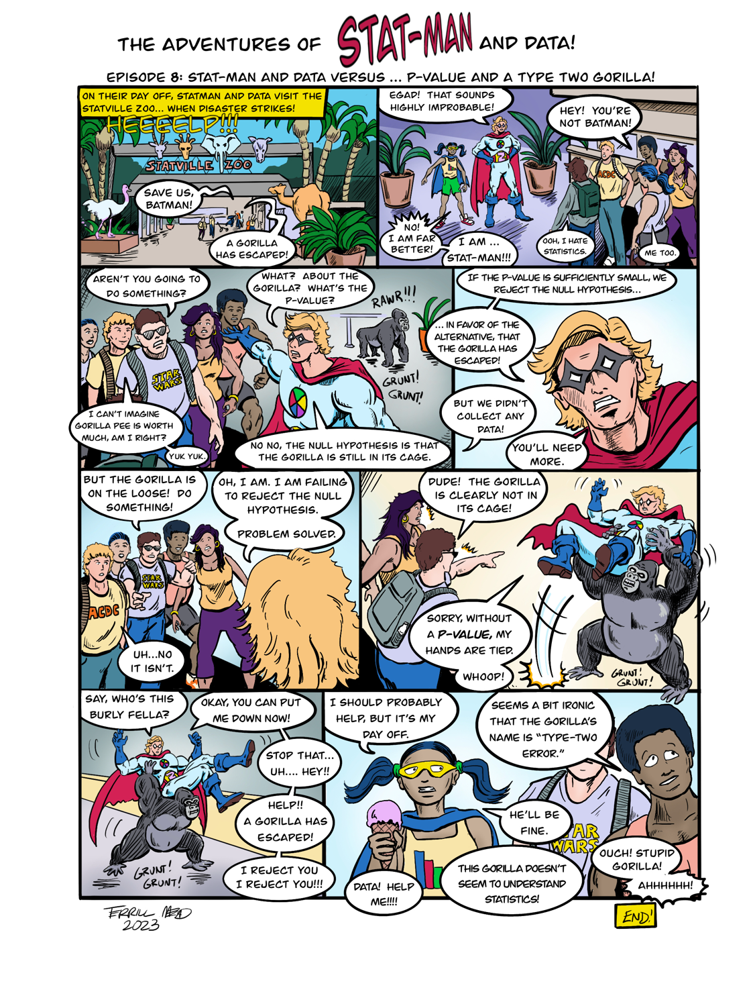

Section 8.4: Hypothesis Testing Summary
Learning Objectives
1.Determine the type of hypothesis test to use- for proportions or means.
Which Test Should We Use?
We have studied two types of hypothesis tests. When we work with qualitative data, we use proportions of samples with a characteristic to create the distribution of sample proportions. We can then use the methods of section 8.2 to conduct hypothesis tests for population proportions.
When we work with quantitative data, we use the sample mean and sample standard deviation to work with the distribution of sample means. We can then use the methods of section 8.3 to conduct hypothesis tests for population means.
See figure 8.17. When you are asked to conduct a hypothesis test, you must first identify the parameter of interest. If we are discussing qualitative variables and sample proportions, we use a hypothesis test for a population proportion. If we are discussing quantitative variables and sample means, we use a hypothesis test for a population mean.
Figure 8.17: Flowchart for hypothesis testing proportions and means.
(There are other hypothesis tests used for other parameters, like the variance or standard deviation, but we will not cover those tests until chapter 11.)
As a reminder, the six-step process is shown in figure 8.18.
Figure 8.18: The steps of hypothesis testing.
Example 1: Conducting a Hypothesis Test
According to the U.S. Public Interest Research Group’s Education Fund report, 65% of college students in the U.S. have skipped purchasing textbooks for their classes due to cost, despite concerns about their grades. A faculty organization believes the proportion is lower and collects sample data to test their claim. They randomly select 545 students of whom 342 report having skipped purchasing textbooks for their classes. Do the data support the faculty organization’s claim? Test at the 0.01 significance level.
Solution:The language of the problem makes it clear that we are asked to conduct a hypothesis test. We need only identify it as test for a population proportion or a test for a population mean. If we read it carefully, we can see the percentage of 65% is given, which is a proportion. Further, we are given a count of the number of students who have skipped purchasing their textbooks, which is a qualitative characteristic. Finally, we are asked to test an organization’s claim that the proportion is lower than 65%. These all inform us that we are to conduct a hypothesis test for a population proportion.
Identify the hypothesis:
•The null hypothesis (contains “=”)
•The alternative hypothesis (contains “<, >, or ”)
Step 1:We are given the fact that 65% of college students have skipped purchasing textbooks for their courses, despite concerns about their grades. The faculty group believes the proportion is lower than 65%. So, the null hypothesis is p = 0.65, and the alternative is that .
Since the alternative hypothesis is , this is a left tailed test.
Step 2:We are asked to use significance 0.01.
Identify or decide the level of significance to use.
Identify the test and verify that all required conditions for the test are met. You need to know that a random sample of size n has been selected following a binomial process. Check that by checking that
Step 3:We are told this is the result of a simple random sample. We assume it satisfies the requirements for a binomial experiment. To make sure that the distribution of sample proportions is normally distributed, check that , using n = 545 and p = 0.65.
Since , the distribution of sampling proportions will have an approximately normal distribution.
Using STATBELT: Select Tests → Inference for Proportions → One sample → Hypothesis test.
•Choose “Summarized data” and type the number of successes and trials.
•Type the assumed null hypothesis p₀ = * and choose left-, right-, or two-tailed for the alternative hypothesis.
•The results appear as you type: the sample proportion, the test statistic, and the P-Value.
Steps 4 and 5: Select Tests → Inference for Proportions → One sample → Hypothesis test and choose “Summarized data.” Type 342 for the number of successes and 545 for the number of trials. Type 0.65 for p₀, the proportion in the null hypothesis. Since this is a left tailed test, choose “Left-tailed,” and type 0.01 for the significance level.
The output gives us the sample proportion of students who skipped purchasing textbooks as , or about 62.8%. The test statistic is -1.100, and P-Value = 0.1356.

•If the P-Value is less than , reject the null hypothesis.
•If the P-Value is NOT less than , DO NOT reject the null hypothesis.
Step 6:Since the P-value = 0.1356 is not less than , we fail to reject the null hypothesis. There is no statistical evidence to conclude that the proportion of students who skipped purchasing textbooks is less than 65%. The data do not support the faculty organization’s claim.
Example 2: Conducting a Hypothesis Test
According to a Slickdeals.net survey (opens in a new tab), Americans spent an average of $276 per month for impulse purchases in 2021. A random sample of monthly spending on impulse purchases from 2022 is given in Table 4. Do the data show that consumers are spending more in 2022? Test the claim at the 0.05 significance level. You can open the impulse spending data (opens in a new tab) in STATBELT (download CSV).
Table 4: Monthly Impulse Spending | |||||
|---|---|---|---|---|---|
311 | 334 | 249 | 251 | 255 | 271 |
392 | 354 | 350 | 437 | 218 | 339 |
246 | 387 | 157 | 192 | 329 | 193 |
142 | 194 | 264 | 326 | 333 | 214 |
292 | 261 | 345 | 163 | 299 | 238 |
449 | 314 | 343 | 281 | 275 | 288 |
Solution:In this problem, we know this is a hypothesis test because we are asked to “test the claim at the 0.05 significance level.” We are told that Americans spent an average (or a mean) of $276 per month. Also, the data that is provided is quantitative (numerical). These factors all tell us that we are going to conduct a hypothesis test for a population mean. Paraphrasing, we wish to test the claim that the mean amount that consumers are spending on impulse purchases has increased.
Step 1:We are testing 2022 data against the mean from 2021. So, the null hypothesis is that there is no change, and Americans continue to spend $276 on average per month on impulse purchases. The alternative hypothesis is that they are spending more.
Identify the hypothesis:
•The null hypothesis (contains “=”)
•The alternative hypothesis (contains “<, >, or ”)
Since the alternative hypothesis is , this is a right tailed test.
Step 2:We are asked to use significance 0.05.
Identify or decide the level of significance to use.
Identify the sampling distribution and verify that all required conditions for the test are met.
Step 3:We are told that the data comes from a random sample. The sample size is not given, but it is easy to count that there 36 observations, and We don’t know the sample mean and sample standard deviation, but they can be computed using STATBELT.
Since the hypothesis test is about means, the test statistic will follow a t-distribution with n – 1 = 36 – 1 = 35 degrees of freedom.
Using STATBELT-
Select Tests → Inference for Means → One sample → Hypothesis test and choose “Column data”
•Choose the column for the variable.
•Type the assumed null hypothesis = * and choose left-, right-, or two-tailed for the alternative hypothesis.
•The results appear as you type: the sample mean, test statistic, and the P-Value.
Steps 4 and 5: Open the impulse spending data in STATBELT with the link in the example. Select Tests → Inference for Means → One sample → Hypothesis test and choose “Column data from the main spreadsheet,” since we are working with raw data. (You can find the summary statistics for the data first if you prefer.) Choose the column “Monthly Impulse Spending,” then type 276 for the mean given in the null hypothesis. Since this is a right tailed test, choose “Right-tailed.”
The output gives us the sample mean equal to $285.7, the degrees of freedom equal to 35, the test statistic t = 0.780 and the P-Value = 0.2204.
![STATBELT Utility Mean Test Results window. Null hypothesis μ = 276, alternative hypothesis μ > 276, significance level 0.05, t test. Sample size n = 36, sample mean = 285.7222, sample standard deviation s = 74.8036, standard error = 12.4673, test statistic t = 0.7798, degrees of freedom = 35, P-value = 0.2204. Purple notes point to the sample mean and the degrees of freedom. Beside the window, flowchart step 4, “Use the sample data to compute the test statistic,” has an arrow to the test statistic, and flowchart step 5, “Use the test statistic and the sampling distribution to find the P-Value,” has an arrow to the P-value.](images/tk_impulsea.png)
•If the P-Value is less than , reject the null hypothesis.
•If the P-Value is NOT less than , DO NOT reject the null hypothesis.
Step 6:Since the P-value = 0.2204 is not less than significance , we fail to reject the null hypothesis. We cannot conclude that Americans spend more money on impulse purchases in 2022. Based on this data, we cannot say for certain. They might, or they might spend the same as they did in 2021.
Example 3: Conducting a Hypothesis Test- Comparing Publisher vs. Free Online Homework
In the fall 2020 semester, a Math professor switched from using a publisher’s online homework management system to a free system called MyOpenMath. The publisher’s system cost students $120 each to use, while the MyOpenMath system was free to use. The professor decided to compare homework grades using each of the two systems. He had data from 10 class sections using the publisher’s online homework system, and data from 4 class sections using the free system. You can open the homework data (opens in a new tab) in STATBELT (download CSV).
The mean homework grade prior to 2020 was 70.02, based on 10 classes taught between 2016 and 2020. The homework grades using the free system, based on 4 classes taught between 2020 and 2022, are listed in Table 5. Test the claim that the mean homework grades were higher using the free system. In other words, test that the mean homework grade of students using the free system (MyOpenMath) is higher than 70.02. Use significance level 0.05.
Table 5: Homework Scores Using the Free Online Homework System (MyOpenMath) | |||||||||
|---|---|---|---|---|---|---|---|---|---|
100 | 99.47 | 98.1 | 100 | 11.82 | 40.04 | 20.56 | 100 | 100 | 70.13 |
70.6 | 27.36 | 79.82 | 19.18 | 100 | 48.66 | 76.11 | 40.08 | 92.87 | 46.4 |
11.68 | 99.91 | 75.79 | 100 | 88.51 | 34 | 81.19 | 100 | 74.19 | 100 |
61.7 | 100 | 99.89 | 24.07 | 89.36 | 99.16 | 85.86 | 94.89 | 86.4 | 29.35 |
38.1 | 99.36 | 97.7 | 63.11 | 46.09 | 83.92 | 100 | 96.33 | 92.81 | 46.3 |
60.8 | 57.87 | 94.98 | 98.93 | 88.16 | 40.87 | 13.92 | 65.24 | 14.19 | 100 |
99.98 | 95.66 | 100 | 54.27 | 36.09 | 19.74 | 98.34 | 31.07 | 61.98 | 100 |
94.64 | 96.4 | 100 | 99.76 | 73.04 | 16.82 | 94.25 | 100 | 60.81 | 46.45 |
100 | 80.87 | 99.56 | 96.87 | 65.22 | 100 | 91.59 | 99.74 | 68.98 | 93.62 |
100 | 100 | 96.2 | 98.67 | 96.73 | 94.84 | 99.95 | 55.89 | 98 | 25.43 |
100 | 100 | 100 | 62.07 | 99.89 | 42.26 | 91.51 | 65.81 | 54.28 | 85.81 |
71.86 | 99.38 | 69.69 | 88.93 | 100 | 99.63 | 8.42 | 64.06 | 91.34 | 34.74 |
97.77 | 89.36 | 81.67 | 81.96 | 85.27 | 100 | 74.61 | 95.19 | 97.94 | 85.34 |
93.5 | 100 | 61.22 | 92.02 | 93.2 | 87.42 | 97.29 | 91.04 | 40.04 | |
80.62 | 98.21 | 92.64 | 0 | 100 | 16.21 | 82.86 | 99.53 | 78.34 | |
Solution:If you read this carefully, you will notice several clues that we are to conduct a hypothesis test for a population mean. Most notable, the second to last sentence asks us to “test that the mean homework grade... is higher than 70.02”. The word “mean” appears three times in the second paragraph, so we are very clearly going to use a hypothesis test for a mean.
Step 1:As usual, the null hypothesis is the status quo, that there is no change in the homework scores using the free system compared to the publisher’s system. The alternative hypothesis is that the mean homework score is higher using the free system.
Identify the hypothesis:
•The null hypothesis (contains “=”)
•The alternative hypothesis (contains “<, >, or ”)
Since the alternative hypothesis is , this is a right tailed test.
Step 2:We are asked to use significance 0.05.
Identify or decide the level of significance to use.
Identify the sampling distribution and verify that all required conditions for the test are met.
Step 3:We are told that the data come from students enrolled in four courses. While these students were not randomly selected, we will treat them as a simple random sample because student enrollments tend to be variable and diverse, approximating random assignment. The sample size is not given, but it is easy to count that there 148 observations, and
Since the hypothesis test is about means, the test statistic will follow a t-distribution with n – 1 = 148 – 1 = 147 degrees of freedom.
Using STATBELT-
Select Tests → Inference for Means → One sample → Hypothesis test and choose “Column data”
•Choose the column for the variable.
•Type the assumed null hypothesis = * and choose left-, right-, or two-tailed for the alternative hypothesis.
•The results appear as you type: the sample mean, test statistic, and the P-Value.
Steps 4 and 5: If we wish, we can find the summary statistics for the students using the free homework system. The sample mean is , and the sample standard deviation is .
Or, since we are working with raw data, we can open the homework data in STATBELT with the link in the example, select Tests → Inference for Means → One sample → Hypothesis test, and choose “Column data from the main spreadsheet.” Choose the column “Homework Score (MyOpenMath Free!),” then type 70.02 for the mean given in the null hypothesis. Since this is a right tailed test, choose “Right-tailed.”
The output gives us the sample mean equal to 76.62, the degrees of freedom equal to 147, the test statistic t = 2.906 and the P-Value = 0.0021.
![STATBELT Utility Mean Test Results window. Null hypothesis μ = 70.02, alternative hypothesis μ > 70.02, significance level 0.05, t test. Sample size n = 148, sample mean = 76.6231, sample standard deviation s = 27.6448, standard error = 2.2724, test statistic t = 2.9058, degrees of freedom = 147, P-value = 0.0021. Purple notes point to the sample mean and the degrees of freedom. Beside the window, flowchart step 4, “Use the sample data to compute the test statistic,” has an arrow to the test statistic, and flowchart step 5, “Use the test statistic and the sampling distribution to find the P-Value,” has an arrow to the P-value.](images/tk_homeworka.png)
•If the P-Value is less than , reject the null hypothesis.
•If the P-Value is NOT less than , DO NOT reject the null hypothesis.
Step 6:Since the P-value = 0.0021 is less than significance , we reject the null hypothesis. We have enough evidence to conclude that the average homework score using the free online system, MyOpenMath, is higher than the average homework score using the publisher’s online management system.
In context, this example shows that using the free online homework system, MyOpenMath, helps to increase student grades. Further, the increase appears to be about 6.6 percentage points, which could make the difference between passing or not passing a course, or the difference between letter grades. Example 1 quoted the statistic that 65% of students will skip purchasing textbooks, and many will also skip or delay purchasing access to a publisher’s expensive homework platform. As a result, these students are prone to starting late, missing homework, and having lower overall scores. Offering free access to books and homework platforms is one way that we can equitably assist students.
(As a side note, there were 10 class sections that paid $120 per student for homework access. With 416 students, that amounted to at least $49,920. The 148 students who used MyOpenMath had higher grades and paid $0. Win-Win!)
Photo by Marvin Meyer (opens in a new tab) on Unsplash (opens in a new tab)

Text version of the comic
The Adventures of Stat-Man and Data! Episode 8: Stat-Man and Data versus… P-Value and a Type Two Gorilla!
Caption: On their day off, Stat-Man and Data visit the Statville Zoo… when disaster strikes!
The entrance to the Statville Zoo, with animal heads over the sign. People run out of the gate.
Voice from the zoo: HEEEELP!!!
Zoo visitor: Save us, Batman!
Zoo visitor: A gorilla has escaped!
Stat-Man and Data stand among potted plants. A group of college students looks at them.
Data: Egad! That sounds highly improbable!
Student: Hey! You’re not Batman!
Data: No! I am far better!
Stat-Man: I am… Stat-Man!!!
Student: Ooh, I hate statistics.
Student: Me too.
The students crowd around Stat-Man. Behind them, a gorilla walks past the empty cage. Gorilla: RAWR!!! Grunt! Grunt!
Student: Aren’t you going to do something?
Stat-Man: What? About the gorilla? What’s the P-value?
Student: I can’t imagine gorilla pee is worth much, am I right? Yuk yuk.
Stat-Man: No no, the null hypothesis is that the gorilla is still in its cage.
Close-up of Stat-Man, looking worried.
Stat-Man: If the P-value is sufficiently small, we reject the null hypothesis…
Stat-Man: …in favor of the alternative, that the gorilla has escaped!
Stat-Man: But we didn’t collect any data!
Stat-Man: You’ll need more.
Student: But the gorilla is on the loose! Do something!
Stat-Man: Oh, I am. I am failing to reject the null hypothesis.
Stat-Man: Problem solved.
Student: Uh… no it isn’t.
A student points at the gorilla, which has picked Stat-Man up and holds him over its head.
Student: Dude! The gorilla is clearly not in its cage!
Stat-Man: Sorry, without a P-value, my hands are tied.
Sound: Whoop! Gorilla: Grunt! Grunt!
The gorilla carries Stat-Man away.
Stat-Man: Say, who’s this burly fella?
Stat-Man: Okay, you can put me down now!
Stat-Man: Stop that… uh… hey!!
Stat-Man: Help!! A gorilla has escaped!
Stat-Man: I reject you, I reject you!!!
Data eats an ice cream cone while two students watch.
Data: I should probably help, but it’s my day off.
Student: Seems a bit ironic that the gorilla’s name is “Type-Two Error.”
Data: He’ll be fine.
Stat-Man (off panel): Data! Help me!!!!
Student: This gorilla doesn’t seem to understand statistics!
Stat-Man (off panel): Ouch! Stupid gorilla! AHHHHHH!
Caption: End!
Signed: Terrill Mead 2023